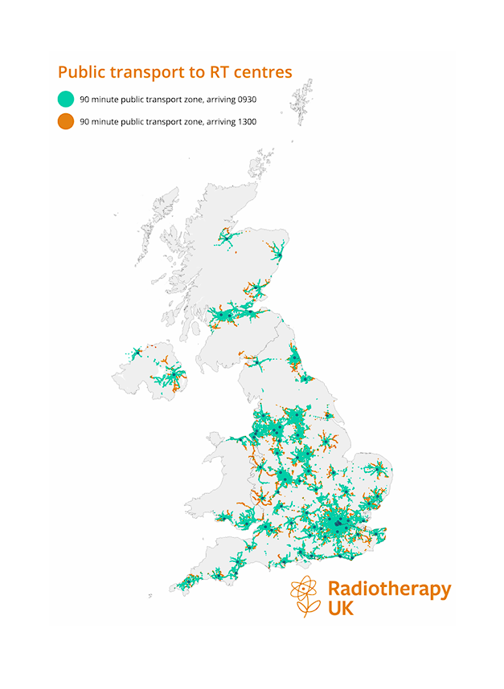

My Work

Habitat Analysis of Wythenshawe’s woodlands for Lesser Spotted Woodpeckers

Travel time to Radiotherapy centres across the UK
Geospatial Analyst
Orginally from Bhiwani, India. Currently I am living in Sheffield, UK. I have been in Sheffield since 2022, living in various neighborhoods of the city. Current hobbies outside of GIS includes playing volleyball, listening to music and creating animated GIFs. I enjoy engaging with people from diverse culture and sharing experinences and learning different languages. Currenlty I have proficeincy in Hindi, English, Sanskrit, and currently learning Chinese.
Skills
Experience
Education
Worked as GIS Consultant for clients as part of academics and while working for Automatic Knowledge Ltd.
Learn moreExperience of working with satellite imagery datasets for measuring the Flood disaster, preparedness plan, Landuse and Landcover analysis, Air quality monitoring and climate change.
Learn moreProficient in using Python, R and web tools like Overpass QL, MapBox for spatial and statistical analysis.
Learn moreSoon I will be uploading some of the open datasets that I have created and compiled varying from First Water Census dataset, India in geopackages, Cricket stadium dataset and Satellite Imagery datasets with state boundaries.
Learn moreStyled cartographic maps and visualisations during postgraduation as well as while working with Dr Rae at Automatic Knowledge Ltd.
Learn more
Habitat Analysis of Wythenshawe’s woodlands for Lesser Spotted Woodpeckers
Travel time to Radiotherapy centres across the UK
2024 Pankaj Parmar• All rights reserved